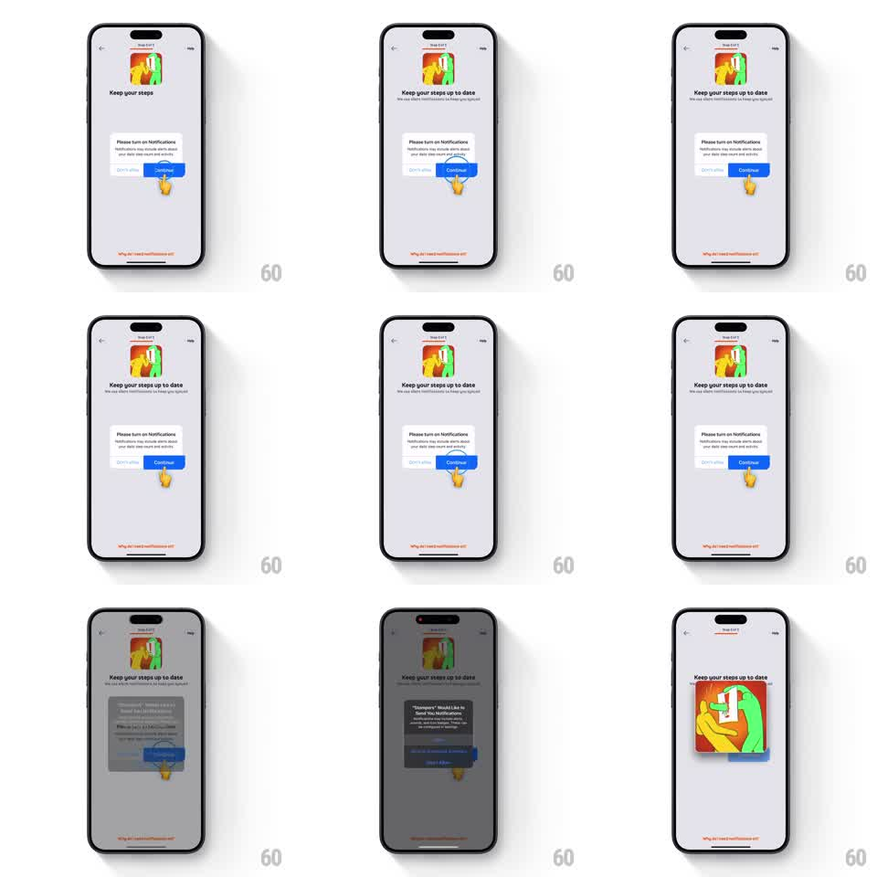

Media
Frame-by-frame

Rebuild this interaction 1:1: Stompers' notification permission beat - tapping Continue raises the system permission dialog, and on allow the header illustration zooms to full screen with a bounce.

Rebuild this interaction 1:1: Stompers' notification permission beat - tapping Continue raises the system permission dialog, and on allow the header illustration zooms to full screen with a bounce. ## Integration Integration: stack-agnostic spec - springs given as stiffness/damping, timed motions as duration + curve; map every value to your framework and animation library of choice. ## Scene Onboarding screen: a colorful header illustration (walking character), "Keep your steps up to date" title, a white card asking to turn on notifications with Don't allow / Continue buttons, and a small ghost finger hinting the tap. ## Motion spec Pattern: permission dialog into celebration zoom, ~1.5s after the tap. - A ghost finger loops a tap hint on the Continue button: drifts in, presses (button scales to 0.95, 150ms), releases, fades. - On tap, the screen dims (200ms) and the system notification dialog springs up from center (spring stiffness 300 damping 20). - On allow, the dialog drops away and the header illustration zooms: it scales from its header slot to fill the screen (spring stiffness 200 damping 15), its background color flooding out to become the new screen's background. - The illustration settles with one overshoot bounce, then the next onboarding content fades up over it. ## Calibration - The zoom is a shared-element transition - the illustration must travel from its exact header rect, not fade in at full size. - The flood of background color tracks the illustration's scale; a separate color wipe reads as two effects. ## Reduced motion Dialog fades; illustration crossfades to full screen. ## Don't miss - The ghost finger disappears the moment the real tap lands - it is a hint, not a cursor. - The system dialog keeps the OS-native presentation; do not restyle it.